Here is one of my favorite black metal albums. It's Bathory's self-titled debut album.
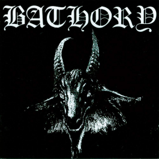Here is one of my favorite goth rock albums (it probably is my favorite). It's The Cure's 8th album.
Here is my favorite Russian deathcore release of the year. It is Slaughter to Prevail's latest album.

Here is of one of my favorite deathcore albums. It's Chelsea Grin's latest album (which was released in 2018, Chelsea Grin we want more music!!!)
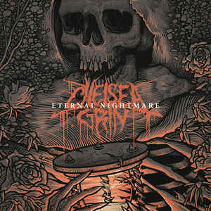Here one of my favorite deathcore singles. It was released in 2016.
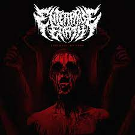Here is one of my favorite metalcore EPs of the year. It's Knocked Loose's latest release and it came out last month.
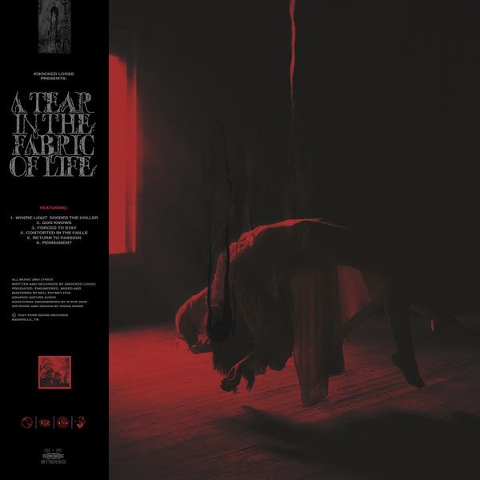Here is one of my favorite deathcore EPs. It's Lorna Shore's latest release (every vocalist that has come and gone is legendary, but Will Ramos tops them all for me).
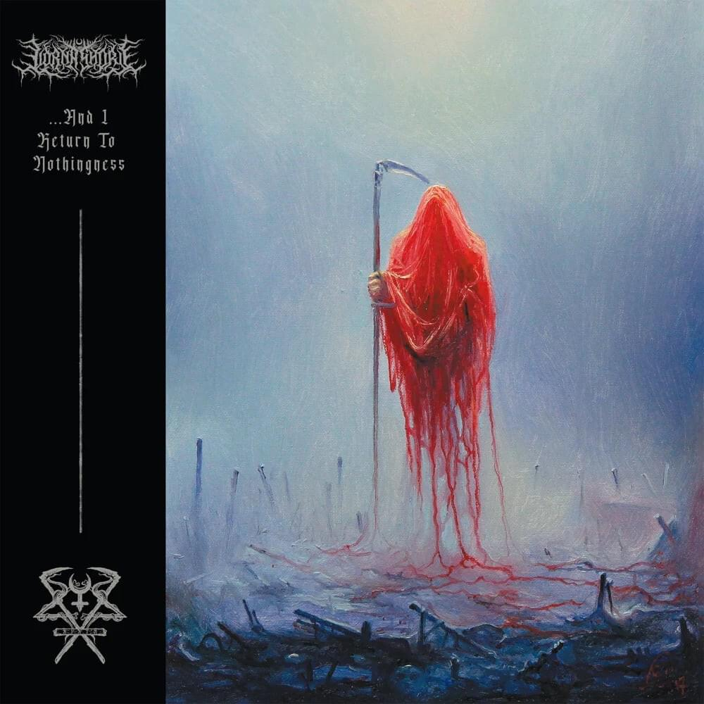Here is one of my favorite black metal EPs. It's Hekseblad's first official EP. If you're interested, Hekseblad is Witcher-themed black metal.
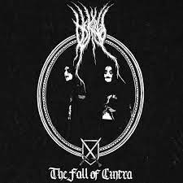Here is probably my favorite deathcore album of the year. It's Whitechapel's latest album and was released 2 days before Halloween.
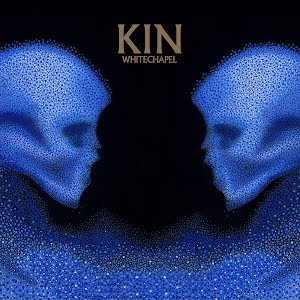Here is one of my favorite dungeon synth albums. It's Erythrite Throne's latest release.
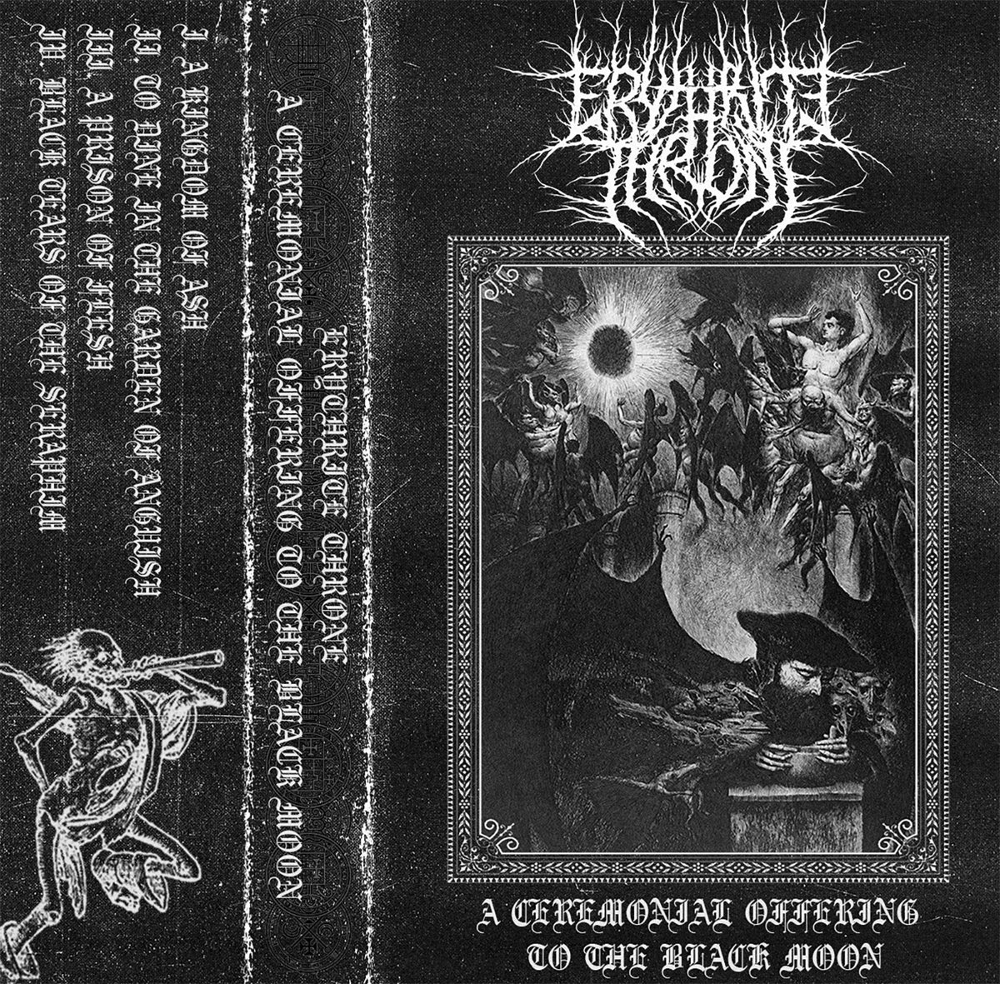Here is one of my favorite deathcore singles of the year. It's Darko US' latest release. The vocalist of Darko US is the same vocalist in Chelsea Grin. Just a heads up, Darko US' music is slightly weird
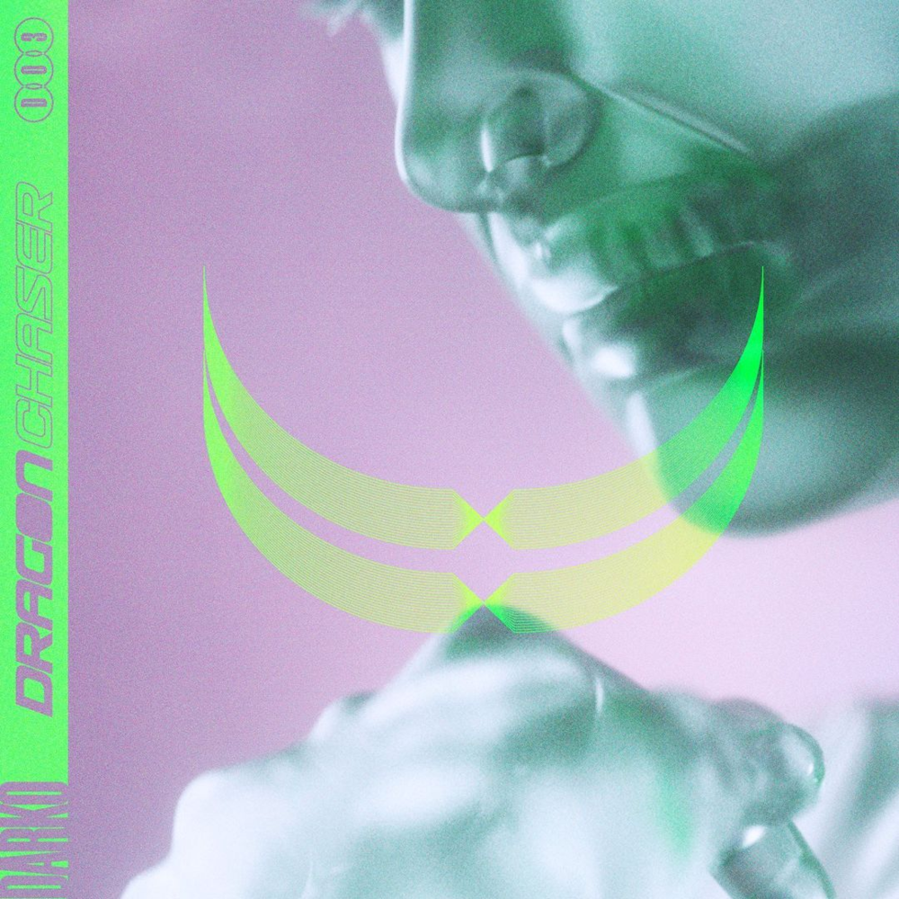Here is one of my favorite metalcore releases of the year. It's Spiritbox's debut album.
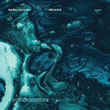Here is one of my favorite dark wave albums. It's Cold Cave's second album.
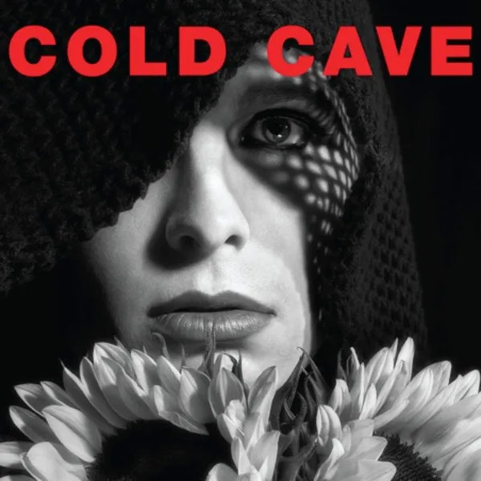Here is my favorite horror-themed metalcore album (which is a theme unique to Ice Nine Kills--as of right now, that is). It's Ice Nine Kills' latest album.
These song themes include Resident Evil, Candyman, My Bloody Valentine, American Psycho, and Pet Sematary.
If you're interested, here is another one of their horror-themed albums. These songs include more well-known and iconic horror themes (Saw, Halloween, TCM)
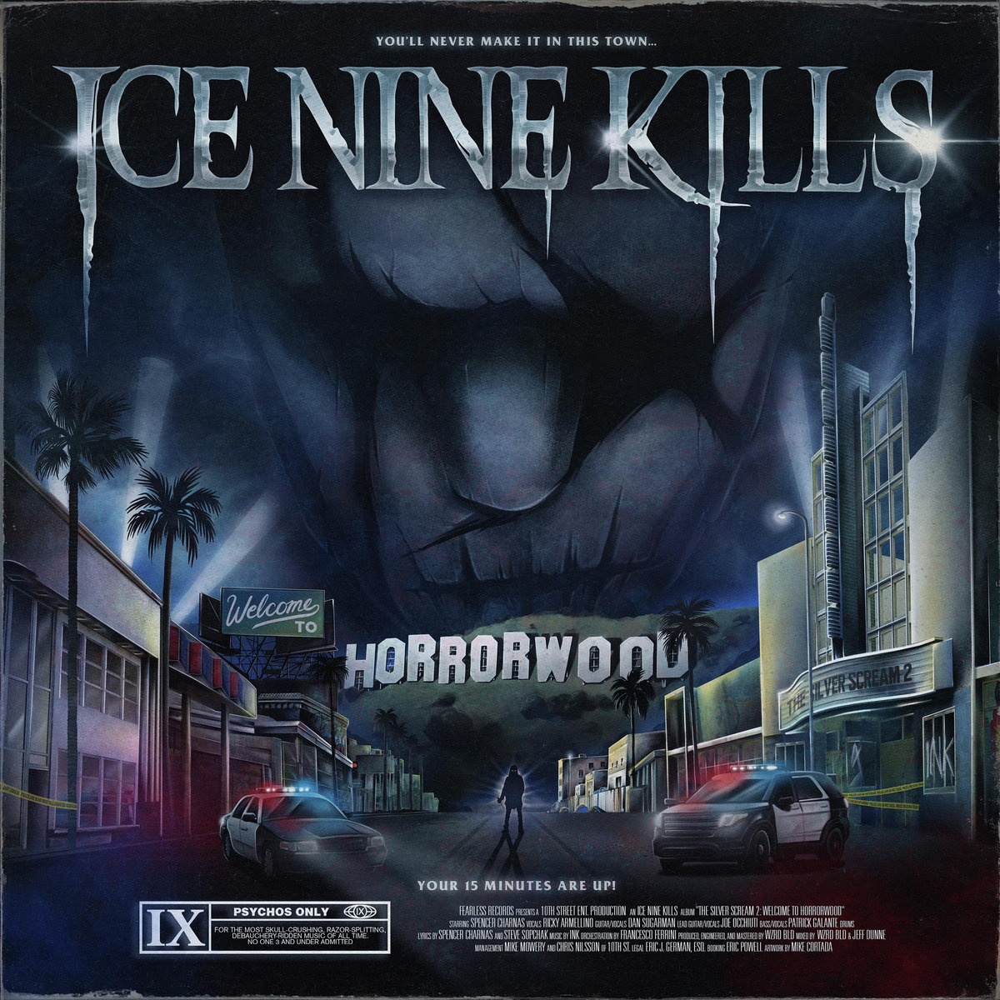Here is one of my favorite-looking and favorite-sounding deathcore albums (meaning I just love the cover art and I love the tracks). It's Thy Art is Murder's fourth album.
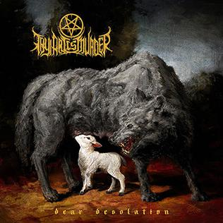